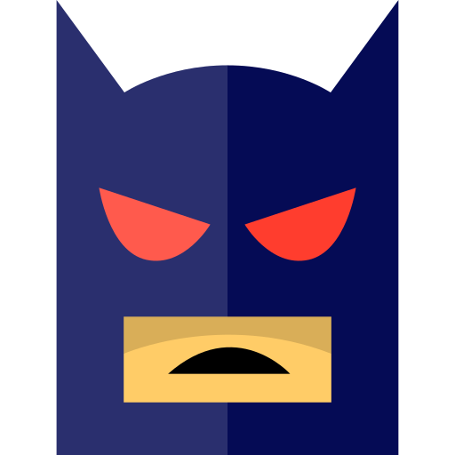
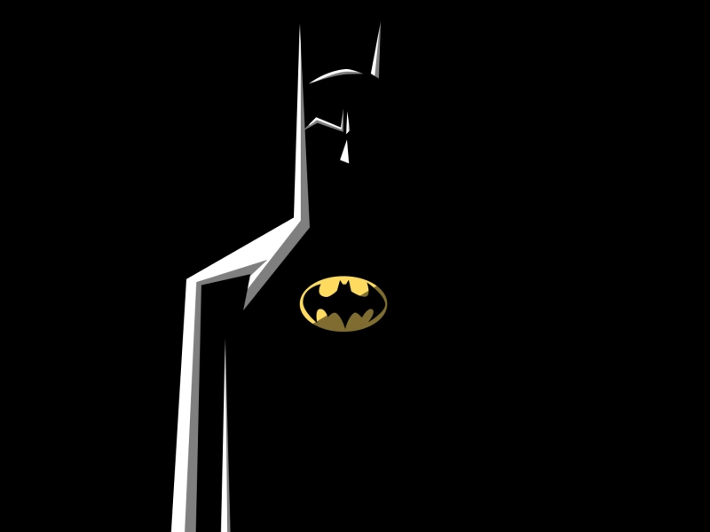
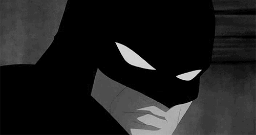
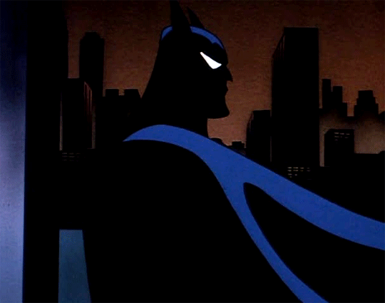

.svg)
Batman is a superhero appearing in American comic books published by DC Comics. The character was created by artist Bob Kane and writer Bill Finger, and debuted in the 27th issue of the comic book Detective Comics on March 30, 1939. In the DC Universe continuity, Batman is the alias of Bruce Wayne, a wealthy American playboy, philanthropist, and industrialist who resides in Gotham City. Batman's origin story features him swearing vengeance against criminals after witnessing the murder of his parents Thomas and Martha, a vendetta tempered with the ideal of justice. He trains himself physically and intellectually, crafts a bat-inspired persona, and monitors the Gotham streets at night. Kane, Finger, and other creators accompanied Batman with supporting characters, including his sidekicks Robin and Batgirl; allies Alfred Pennyworth, James Gordon, and Catwoman; and foes such as the Penguin, the Riddler, Two-Face, and his archenemy the Joker.
TimeLine

Batman's secret identity is Bruce Wayne, a wealthy American industrialist. As a child, Bruce witnessed the murder of his parents, Dr. Thomas Wayne and Martha Wayne, which ultimately led him to craft the Batman persona and seek justice against criminals. He resides on the outskirts of Gotham City in his personal residence, Wayne Manor. Wayne averts suspicion by acting the part of a superficial playboy idly living off his family's fortune and the profits of Wayne Enterprises, his inherited conglomerate.He supports philanthropic causes through his nonprofit Wayne Foundation, which in part addresses social issues encouraging crime as well as assisting victims of it, but is more widely known as a celebrity socialite.In public, he frequently appears in the company of high-status women, which encourages tabloid gossip while feigning near-drunkenness with consuming large quantities of disguised ginger ale since Wayne is actually a strict
TimeLine
Batman's secret identity is Bruce Wayne, a wealthy American industrialist. As a child, Bruce witnessed the murder of his parents, Dr. Thomas Wayne and Martha Wayne, which ultimately led him to craft the Batman persona and seek justice against criminals. He resides on the outskirts of Gotham City in his personal residence, Wayne Manor. Wayne averts suspicion by acting the part of a superficial playboy idly living off his family's fortune and the profits of Wayne Enterprises, his inherited conglomerate.He supports philanthropic causes through his nonprofit Wayne Foundation, which in part addresses social issues encouraging crime as well as assisting victims of it, but is more widely known as a celebrity socialite.In public, he frequently appears in the company of high-status women, which encourages tabloid gossip while feigning near-drunkenness with consuming large quantities of disguised ginger ale since Wayne is actually a strict
TimeLine
